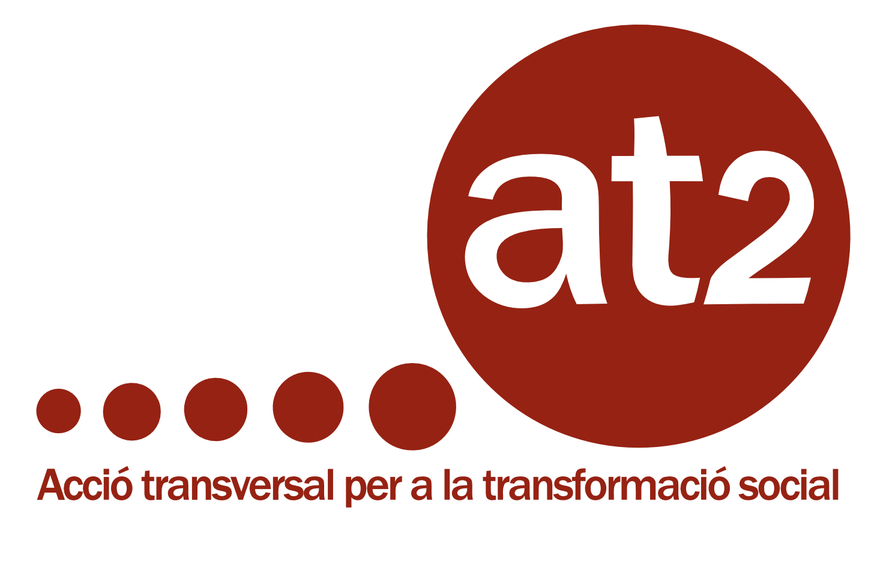

Facilitant que els veïns del Baix Llobregat es desempalleguin de les grans telecos.

GuifiBaix és un projecte d'economia social nascut a Sant Joan Despí. El nostre principal objectiu és facilitar que la gent del Baix Llobregat pugui gaudir d'unes xarxes de telecomunicacions més lliures i assequibles, fora de les pràctiques abusives que les empreses dominants del sector exerceixen sobre els usuaris, els treballadors i la societat.
 Per aconseguir aquesta fita, els facilitem connectar-se a la xarxa oberta guifi.net
per donar resposta a les seves necessitats de telefonia fixa i Internet.
Per aconseguir aquesta fita, els facilitem connectar-se a la xarxa oberta guifi.net
per donar resposta a les seves necessitats de telefonia fixa i Internet.
 GuifiBaix és una iniciativa nascuda de la campanya
Desconnexió de l'IBEX35
del 15M de Sant Joan Despí.
L'objectiu de la campanya és posar a l'abast dels ciutadans
la informació i els mitjans per deixar d'engreixar a les
empreses oligopolístiques,
nacionals i extrangeres, que controlen sectors clau de la societat com ara
el financier, l'energètic, l'alimentació, els medis,
el tecnològic... també el sector de les telecomunicacions.
GuifiBaix és una iniciativa nascuda de la campanya
Desconnexió de l'IBEX35
del 15M de Sant Joan Despí.
L'objectiu de la campanya és posar a l'abast dels ciutadans
la informació i els mitjans per deixar d'engreixar a les
empreses oligopolístiques,
nacionals i extrangeres, que controlen sectors clau de la societat com ara
el financier, l'energètic, l'alimentació, els medis,
el tecnològic... també el sector de les telecomunicacions.
En concret, en el sector de les telecomunicacions vam trobar l'alternativa Guifi.net, que funcionava prou bé a d'altres comarques de Catalunya, però que al Baix Llobregat li mancava un actor local profesionalitzat, que facilités la incorporació del públic en general i garantís la qualitat del servei.
 Els dos primers anys, fins que es va constituir formalment la cooperativa a finals del 2015, GuifiBaix va funcionar com un projecte dins la incubadora d'economia social, AT2.
GuifiBaix facilita que qualsevol persona dels municipis del Baix Llobregat pugui participar de la xarxa Guifi.net, encara que no tingui els coneixements tècnics necessaris, o no tingui temps per dedicar-s'hi.
Ofereix solucions a punt per endollar i funcionar, incloent el cablejat de l'edifici, la configuració dels aparells de xarxa... Manté i coordina la xarxa de la zona, repartint el fluxe de dades, i oferint serveis convenients als usuaris.
Guifibaix és una Societat Cooperativa Catalana Limitada (SCCL), que és la fórmula jurídica de les cooperatives a Catalunya. Dintre de les possibles modalitats de cooperativa som:
Així queda reflexat als Estatuts de la Cooperativa (PDF) que tens disponibles també en format editable (MarkDown). També pots veure les diferències que hi ha amb el model base de la Generalitat.
La llibertat dels nostres usuaris és la garantia per un tracte just. D'un usuari que és lliure de marxar, no es pot abusar.
I com és que són lliures?
Tot plegat fa que, si en algun moment ens tornèssim malèvols, no hi hagi cap impediment legal o tècnic que no permeti a hom d'escollir o articular una alternativa, professionalitzada o no, per seguir fent servir la xarxa.
Per garantir unes condicions justes de treball, ens organitzem sota principis cooperatius i d'economia social.
L'horitzontalitat de l'organització i en la pressa de decissions dóna als treballadors control sobre les seves condicions laborals, en igualtat de drets i deures.
Per evitar desigualtats degudes a l'especialització del treball es fa formació creuada per compartir el coneixement especialitzat i que hi hagi més persones que puguin fer la mateixa tasca.
Guifibaix asumeix, al mateix contracte de servei a l'usuari, un seguit de compromissos que van més enllà que el servei en sí mateix. No són compromisos abstractes, sinó que concretem en fets comprovables. Per exemple:
Estem disposats a incorporar més compromisos si ens fan ser millors envers la societat i no va en contra d'una mínima viabilitat del projecte.
A finals de 2015, un cop constituida la cooperativa, es va encetar el debat entre usuaris, cooperativistes i voluntaris sobre com ha de ser l'entitat que donarà veu als usuaris i els permetrà exercir la seva sobirania sobre el futur de la xarxa.
Pots participar a la discussió apuntant-te a la llista de correu i presentant-te.

guifi.net és una xarxa oberta. Cada participant construeix només el tram de xarxa que passa per casa seva i posant el seu tram a disposició de la resta, té dret a circular pels altres trams.
 Normalment els enllacos es fan posant,
als terrats o a les balconades,
antenes Wi-Fi direccionals
apuntant-se entre sí.
Normalment els enllacos es fan posant,
als terrats o a les balconades,
antenes Wi-Fi direccionals
apuntant-se entre sí.
A les zones on ja hi ha volum suficient, s'ha començat a fer enllaços de fibra òptica en comptes d'enllaços Wi-Fi.
 Els participants de la xarxa comparteixen recursos i serveis.
El més popular és la connectivitat a Internet
(compartir fibres òptiques i ADSL's),
però també hi ha d'altres serveis interns de la xarxa
que van a les velocitats de la xarxa interna.
Els participants de la xarxa comparteixen recursos i serveis.
El més popular és la connectivitat a Internet
(compartir fibres òptiques i ADSL's),
però també hi ha d'altres serveis interns de la xarxa
que van a les velocitats de la xarxa interna.
Alguns exemples són la telefonia IP, l'enmagatzament i compartició de fitxers al núvol, els serveis de video-conferència, les descàrregues compartides, emisores de ràdio i televisió online, e-mail, hosting web, intranets, servidors de noms, servidors de jocs online...
 A data d'avui guifi.net té gairebé 30.000 nodes actius.
Està molt desplegada per zones com ara
Osona (on va nèixer), El Maresme, El Penedés, Castellò...
L'actor comú és el voluntariat, però sovint entren
en sinèrgies positives amb empreses i ajuntaments que potencien la xarxa.
A data d'avui guifi.net té gairebé 30.000 nodes actius.
Està molt desplegada per zones com ara
Osona (on va nèixer), El Maresme, El Penedés, Castellò...
L'actor comú és el voluntariat, però sovint entren
en sinèrgies positives amb empreses i ajuntaments que potencien la xarxa.
Abans de GuifiBaix, al nostre entorn, cal destacar els desplegaments que s'han fet a Torrelles i a Sant Feliu. Han estat projectes impulsats des dels ajuntaments que per un motiu o altre, no han tingut la continuïtat desitjada. Nosaltres defensem que els projectes han de tenir una sòlida base comunitària que asseguri aquesta continuitat independentment dels actors públics.
 A Sant Joan, fa anys que la AAVV de l'Eixample va fer un desplegament al barri
on una desena de famílies i el local de l'associació compartien 2 ADSL's.
En nèixer GuifiBaix, es va connectar aquesta illa amb la resta de Guifi.net,
vam extendre la xarxa al Centre, Les Planes i TV3,
i ara l'estem connectant a altres pobles com ara
Cornellà, El Prat, Viladecans, Esplugues i Sant Climent.
Pots veure tots els nodes actius que hem muntat nosaltres al mapa en viu.
A Sant Joan, fa anys que la AAVV de l'Eixample va fer un desplegament al barri
on una desena de famílies i el local de l'associació compartien 2 ADSL's.
En nèixer GuifiBaix, es va connectar aquesta illa amb la resta de Guifi.net,
vam extendre la xarxa al Centre, Les Planes i TV3,
i ara l'estem connectant a altres pobles com ara
Cornellà, El Prat, Viladecans, Esplugues i Sant Climent.
Pots veure tots els nodes actius que hem muntat nosaltres al mapa en viu.
 A Sant Joan Despí,
som pioners en l'ús del sistema qmp a les antenes.
Fins fa poc la xarxa guifi.net estava basada en dos nivells,
els super-nodes que formaven la xarxa troncal
i els nodes simples que enllaçaven els usuaris amb els super-nodes.
A Sant Joan Despí,
som pioners en l'ús del sistema qmp a les antenes.
Fins fa poc la xarxa guifi.net estava basada en dos nivells,
els super-nodes que formaven la xarxa troncal
i els nodes simples que enllaçaven els usuaris amb els super-nodes.
Amb qmp no hi ha jerarquies, sinó horitzontalitat. Qualsevol node es pot connectar amb qualsevol altre. Cada edifici afegit es un nou camí possible per les dades. Això facilita poder donar cobertura a noves àrees al mateix temps que permet camins reduntants que fan la xarxa més flexible i tolerant a falles o saturacions.
Es clar que sí. De fet, les instal·lacions que fa GuifiBaix queden llestes per connectar i navegar.
És important entendre, però, que guifi.net no és Internet en sí mateix, i que GuifiBaix no és el proveidor d'aquest Internet. Són els mateixos participants de la xarxa que comparteixen, mitjançant guifi.net, el cabal sobrant de les fibres òptiques i els ADSL's de que disposen.
Per això, GuifiBaix recomana a les comunitats de veïns de sis o més vivendes que mantinguin una o dos connexions compartides per expandir el cabal disponible a la xarxa, amb preferència si és Fibra Òptica o ADSL, que en cas de saturació o caiguda d'una, el tràfic automàticament es redirigeix, i aixó pugui tenir un servei d'internet més estable.

Normalment, la xarxa interna de GuifiBaix té més capacitat que les sortides a Internet (Fibres Òptiques, ADSL's...), i són aquestes les que marquen la velocitat de l'accés a Internet.
El sistema reparteix el cabal entre totes les sortides disponibles al municipi. La teva velocitat màxima depén de la sortida que et toqui en un moment donat per disponibilitat i proximitat. En el millor dels casos la tindràs tota per tú, però, normalment, serà compartida. Per sort, passa que les línies estan ocioses la major part del temps.
Hem comprovat que funciona prou bé deixant, de mitjana, una fibra cada 7 o un ADSL's cada 5, i és el que procurem deixar com a mínim.
Hi ha tres modalitats: 1- Guifibaix aporta sortides a internet a la xarxa. És una aportació com a cooperativa a la xarxa. 2- Hi ha qui aporta ampla de banda, i per tant busca de compartir despeses amb d'altres, i el seu manteniment està cobert per altes usuaris que no aporten 3- Hi ha usuaris apadrinats que paguen un manteniment a la cooperativa i els fem un descompte de la mateixa perquè puguin col-laborar amb el segon.
Tenim tres opcions de futur:
D'aquesta forma, poderm anar creant una xarxa una mica més lliure.
Mentre això està creixent, fem servir companyies clàssiques. Igualment, connectant-se a guifi.net ja és un avanç en nivell de dependència i estalvi, respecte la situació de que cada domicili tingui una línia.
Es clar que sí. Fins i tot pots conservar el número.
Cal fer servir 'telefonia IP'. que no es res més que, enviar el senyal telefònic per internet, tal com fan els locutoris. A la telefonia IP no hi ha despesa amb establiment de trucada i i en fer d'internacionals, els preus no són tan abusius com si ho és amb la telefonia clàssica.

Per poder fer-ho calen dues coses: Un equip per trucar y contractar un operador de Telefonia IP. GuifiBaix us facilitarà, diferents ofertes de les dues coses i les oferirà configurades i llestes per funcionar. Encara que sempre teniu llibertat de buscar-vos les vostres pròpies opcions.
L'equip per trucar pot ser:
L'operador de telefonia IP és necessari per fer o rebre trucades fora de la xarxa guifi.net. Són els que fan servir els locutoris, i fan uns preus molt barats.
Només per la vostra comoditat, GuifiBaix us plantejarà paquets d'aparells i tarifes amb operadors adequats pel vostre cas i llestos per funcionar. Ho oferim només per la vostra conveniencia, els participants de la xarxa teniu la llibertat de buscar-vos pel vostre compte on comprar els aparells i a qui contractar la telefonia IP.
Un altre detall beneficiós és que els telèfons IP permeten fer trucades gratis directes entre usuaris de guifi.net sense passar per cap operador. O que el telèfon fixe deixa de ser fixe i us el podeu emportar enlloc on hi hagi internet.
GuifiBaix fa principalment instaŀlacions a particulars i comunitats de veïns.
Normalment es fa el següent:
A part, cadascú pot demanar:
GuifiBaix asumeix sense cap pagament, però tampoc garantia, les tasques de mantenir i administrar els elements comuns de la xarxa: interconexions, servidors...
GuifiBaix també cobra un manteniment de la xarxa, la resolució d'incidències de connectivitat, i un seguit de serveis de conveniència que anem desenvolupant: descàrregues compartides, streaming de vídeo, serveis tipus núvol, intranets, servidors de jocs online, cursos...
Els equips que instalem a un edifici resten en propietat dels usuaris que l'hagin financiat.
Llevat de les degudes garanties o d'una mala manipulació per part nostra, els dispositius són responsabilitat dels veïns, per exemple, en cas de robatori o desperfectes.
Tot i que els equips siguin propietat i responsabilitat de la comunitat, GuifiBaix es reserva el dret d'accés tant físic com telemàtic als elements de xarxa comunitaris com ara l'antena i els dispositius de distribució (routers, switches...) per poder fer feines de manteniment, amb el compromís de respectar la privadesa de cadascú.
Si en un moment donat no feu servir més els equips, es pot valorar de recomprar-los, a un preu adient a la seva amortització i estat. GuifiBaix en cap cas està obligat això però la volem potenciar amb l'objectiu de reduir l'escombreria electrònica si els equips es poguèssin reutilitzar d'alguna forma.
Donada la dificultat de fer un estudi a llarg termini i aïllant altres variables, científicament no està aclarida la perillositat o no de les ones electromagnètiques no ionitzants (llum visible, ràdio, televisió, telefonia mòbil, wifi, wimax...).
Sí que hi ha consens en que, en cas de que sigui perillós, el perill dependrà de factors com ara la distància i el temps d'exposició, la potència emesa, i la freqüència de les ones. Hi ha evidència d'efectes nocius quan aquests factors han estat extrems.
Tenint en compte això, cal dir que, les nostres antenes emeten ordres de magnitud per sota en potència de les emisions que poden fer els mòbils, que es solen portar tota l'estona pegats al cos. A mès estan direccionades enfocant a les altres antenes.
Per fer-se una idea: Les grans antenes de telefonia mòbil que es posen als terrats tènen potència per creuar murs i donar cobertura, per exemple, a un sòtan, estant l'antena dos i tres carrers enllà. És més, els mòbils que tenim a les butxaques contesten emetent amb prou potència per fer el camí de tornada.
Les nostres antenes emeten tan poca potència que necessiten tenir, gairebé, visió directa entre elles. A la que poses un obstacle entremig, un arbre o una paret, s'atenúa el senyal.
Les antenes de guifi.net que més potència tenen són les que conecten poblacions entre sí. El tècnic de "La campanya contra les antenes de telefonia" a Matarò, va certificar com a no riscoses les emissions a sota d'una d'aquestes antenes 'grans'.
Si instaŀleu les antenes vosaltres, per curar-vos en salut, igual que fem nosaltres, teniu cura de:
Us convidem a fer-ho extensiu a d'altres veïns per poder aprofitar els equips comuns, però no recomanem intentar moure tota la comunitat si no ho tenen ja molt clar perqué solen ser molt complexes. La nostra experiència és que, si es vol involucrar a la comunitat de veïns, el procés es dilata molt, i sol caure en sac trencat.
El servei de telecomunicacions es considera un servei bàsic. Igual que ho és el servei de televió digital. Com a tal, la instaŀlació només requereix de notificació al president, no pas cap aprovació. Els costos anirien a càrrec només de qui ho vol.
El reglament de la comunitat pot condicionar com fer la instaŀlació, sempre que no la faci inviable.
La Fundació guifi.net ho està i això cobreix les activitats que, de moment, fem com a GuifiBaix. Ens registrarem si en cap moment comencem a fer alguna activitat que la Fundacio no pogués cobrir.
Sí. El registre ens compromet a certa qualitat de servei: temps de resposta, disponibilitat...
La llei estableix un seguit de bandes de freqüència reservades per comunicar antenes WiFi entre elles, sense que calgui cap licència administrativa. Els equips que fem servir vénen limitats de fàbrica per fer servir només aquestes freqüències i els fem servir bastant per sota de la màxima potència permesa que també està limitada de fàbrica.
La llei permet que les persones comparteixin l'ADSL en mode de auto-prestació sense cap tipus d'autorització administrativa (Art. 6.2 de la Ley 32/2003 General de Telecomunicaciones). Segons la Comisió Nacional de Telecomunicacions, perquè sigui auto-prestació, ha de estar encaminat a cobrir les necessitats pròpies de comunicació, no ha d'haver ànim de lucre i estar limitat als usuaris que en formen part.
{kind=link}